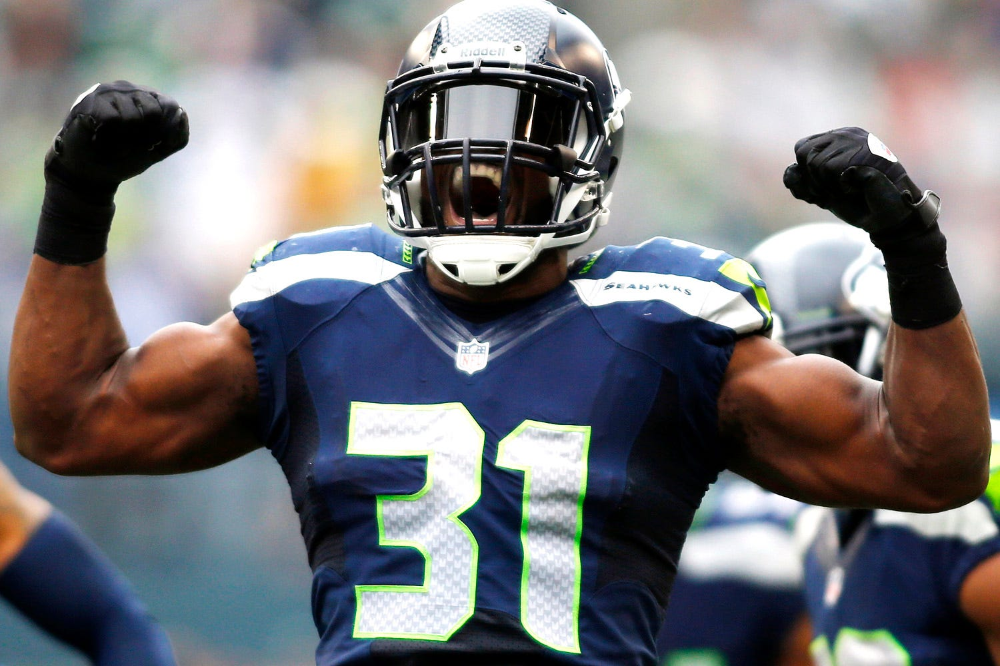

Home
Team History
Notable Players
Team Stadium
See Also
Some Notable Players in this teams history
Russell Wilson (Quarterback)
Marshawn Lynch (Running Back)
Steve Largent (Wide Receiver)
Cortez Kennedy (Defensive Tackle)
Richard Sherman (Cornerback)
Kam Chancellor (Safety)
 Kam Chancellor, also known as "Bam Bam", was the Enforcer of the nickname "Legion of Boom". A name given to the Seahawks defence from 2012 to 2019.